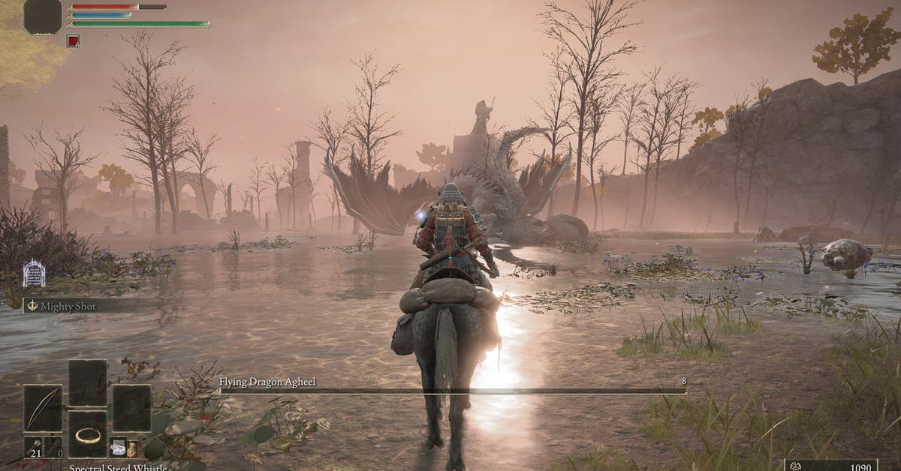

Review "The Legend of Zelda: Breath of the Wild"

"The Legend of Zelda: Breath of the Wild"
adalah game open-world yang memukau dengan dunia Hyrule yang
luas dan penuh rahasia. Game ini memberikan kebebasan penuh
kepada pemain untuk menjelajahi setiap sudut map, memecahkan
teka-teki, dan menghadapi musuh dengan berbagai strategi.
Fitur fisika dan kimia yang realistis membuat setiap tindakan
terasa bermakna.
Dunia Hyrule dirancang dengan sangat detail, mulai dari
pegunungan yang tinggi hingga hutan yang lebat. Setiap area
memiliki tantangan dan rahasia tersendiri, membuat eksplorasi
terasa selalu menyenangkan. Anda bisa memanjat gunung,
berenang di sungai, atau bahkan terbang menggunakan
layang-layang.
Secara grafis, "Breath of the Wild" menggunakan gaya seni
cel-shading yang indah dan timeless. Meskipun tidak
se-realistik game AAA lainnya, visualnya tetap memukau dan
cocok dengan tema petualangan yang epik. Gameplaynya juga
sangat inovatif, dengan sistem crafting, memasak, dan
pertarungan yang menantang.
Kesimpulannya, "The Legend of Zelda: Breath of the Wild"
adalah salah satu game terbaik sepanjang masa. Jika Anda
menyukai petualangan epik dan tantangan yang seru, game ini
wajib dimainkan.
Tips Bermain "Cyberpunk 2077"

"Cyberpunk 2077" menawarkan pengalaman RPG
futuristik di kota Night City yang penuh dengan kejahatan dan
teknologi canggih. Game ini menampilkan dunia open-world yang
luas, dengan berbagai misi utama dan side quest yang menarik.
Namun, dunia Night City juga penuh dengan bahaya, jadi Anda
perlu berhati-hati.
Untuk bertahan di dunia ini, pastikan Anda sering menjelajahi
kota untuk menemukan senjata langka dan side quest menarik.
Selain itu, upgrade karakter Anda dengan fokus pada skill
tertentu, seperti hacking atau stealth. Misalnya, jika Anda
suka bermain stealth, tingkatkan skill hacking dan silent
takedown untuk menghindari konflik langsung.
Manfaatkan juga teknologi cyberware untuk meningkatkan
kemampuan karakter Anda. Misalnya, mantis blades untuk
serangan jarak dekat atau sandevistan untuk memperlambat
waktu. Dengan kombinasi skill dan teknologi yang tepat, Anda
bisa mengatasi tantangan di Night City dengan lebih mudah.
Meskipun sempat menuai kontroversi karena bug saat rilis,
"Cyberpunk 2077" kini telah mengalami perbaikan signifikan.
Game ini cocok untuk para pemain yang menyukai cerita mendalam
dan gameplay yang menantang.
Trailer Terbaru "Starfield"

"Starfield" adalah game RPG luar angkasa
terbaru dari Bethesda yang menjanjikan petualangan epik di
antara bintang-bintang. Trailer terbaru menunjukkan gameplay
yang mendalam, dengan fitur eksplorasi planet, customisasi
kapal, dan pertarungan sengit. Game ini diharapkan menjadi
salah satu rilis terbesar tahun ini.
Dunia "Starfield" sangat luas, dengan ratusan planet yang bisa
dijelajahi. Setiap planet memiliki ekosistem dan tantangan
tersendiri, mulai dari cuaca ekstrem hingga makhluk alien yang
berbahaya. Anda bisa membangun basis, menambang sumber daya,
dan berinteraksi dengan penduduk lokal.
Fitur customisasi kapal juga menjadi salah satu daya tarik
utama game ini. Anda bisa merancang kapal sesuai keinginan,
mulai dari desain interior hingga persenjataan. Selain itu,
pertarungan di luar angkasa juga terlihat seru, dengan grafis
yang memukau dan mekanik yang realistis.
Dengan dunia yang luas dan cerita yang menarik, "Starfield"
berpotensi menjadi game RPG terbaik generasi ini. Tunggu
rilisnya dan siapkan diri untuk menjelajahi galaksi!
Ulasan "Elden Ring"

"Elden Ring" adalah kolaborasi antara
FromSoftware dan George R.R. Martin, menciptakan dunia fantasi
gelap yang memukau. Game ini menggabungkan elemen open-world
dengan gameplay Souls-like yang menantang, menawarkan
kebebasan eksplorasi dan pertarungan sengit.
Dunia "Elden Ring" sangat luas, dengan berbagai area yang
dirancang dengan detail. Anda bisa menjelajahi kastil kuno,
gua gelap, atau padang rumput yang luas. Setiap area memiliki
musuh dan boss yang menantang, serta cerita tersembunyi yang
bisa Anda temukan.
Gameplaynya tetap mempertahankan kesulitan khas FromSoftware,
tetapi dengan tambahan fitur baru seperti mount dan sistem
crafting. Anda bisa menunggang kuda untuk menjelajahi dunia
dengan cepat atau membuat item untuk membantu dalam
pertarungan.
Dengan boss-boss yang menantang dan cerita yang misterius,
"Elden Ring" berhasil memikat para pemain. Jika Anda menyukai
tantangan dan dunia yang penuh rahasia, game ini wajib dicoba.